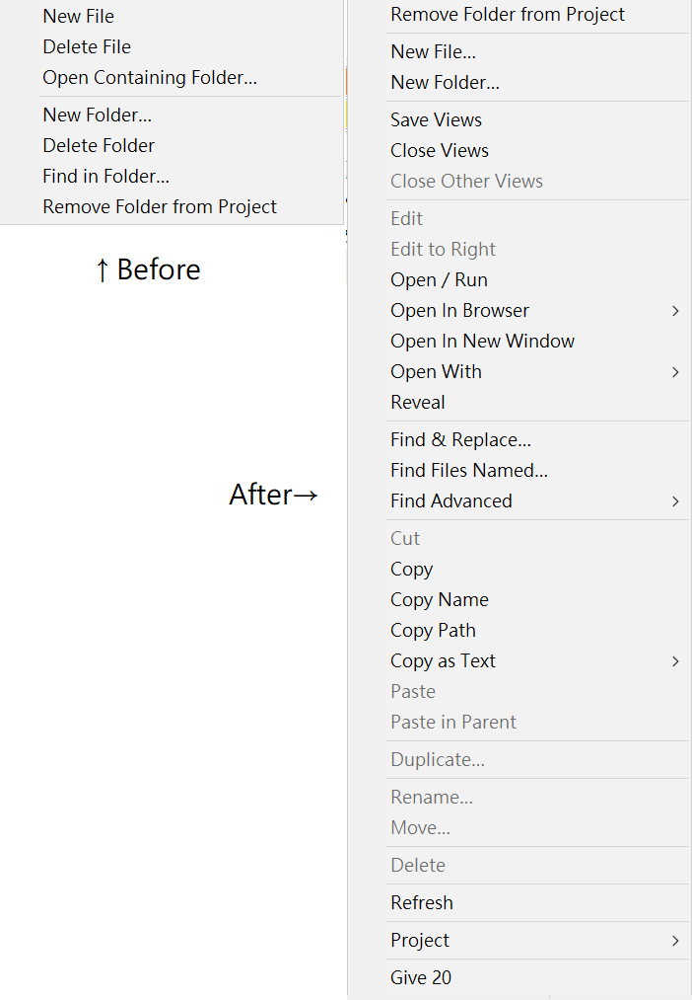

本文為觀看六角學院：一小時上手 Sublime Text 3 網頁編輯器的筆記。
安裝與基礎操作
安裝
自訂編輯器外觀
Preferences選單可以自訂編輯器外觀，調整字體大小。
調整視窗
View>Layout可以改視窗顯示的方式。
側欄
View>Side Bar可以把專案資料夾拉進side bar方便看。
搜尋檔案及程式碼
- Goto>Goto Anything（Ctrl+P）
可以搜尋檔案，例如「資料夾名稱 檔名」；後面加上「:行數」可以跳到該行。 - Goto>Goto Symbol（Ctrl+R）
可以搜尋css檔案中的class名稱。
常用熱鍵
- Edit>Text>Insert Line Before（Ctrl+Shift+Enter）
- Edit>Text>Insert Line After（Ctrl+Enter）
方便新增空行。 - Edit>Code Folding
裡面有一些方便摺疊code的熱鍵，要注意縮排要先縮對。 - Ctrl+D
多選相同的標籤。
插件分享
使用Package Control
安裝Package Control：開console（Ctrl+`）把網頁裡的程式碼貼進去安裝。
Tools>Commend Palette（Ctrl+Shift+P）可以搜尋指令。
搜尋「Package Control: Install Package」，點選之後會跑出可以安裝的Plugin。
Package Control網站
- trending是最近流行的議題；new通常是使用者做的；popular是比較熱門的。
- 沒事可以找來玩，不想用了的話用Ctrl+Shift+P搜尋「Package Control: Remove Package」來移除。
Emmet
排行第一，大家都在用。
輸入標籤的時候會出現選項，用法可以查詢Emmet字典。
以下打完按tab會自動產生特定格式：
- 「HTML:5」或「!」：HTML5。
- 「.class名稱」：class名稱的div。
- 「link:css」：css的link標籤。
- 「標籤名稱*個數」：產生好幾個標籤。
- 「標籤1>標籤2」：巢狀的標籤。
- 「標籤1+標籤2」：同層的標籤。
- 「lotem字數」：特定字數的假字
- 「標籤[屬性=屬性內容]{標籤內容}」：產生特定屬性內容跟標籤內容的標籤
- 「$＠數字」：從指定數字開始自動計數；可以用在class名稱和標籤內容等。
- CSS相關的寫法例如：
- 「m10」：margin: 10px;
- 「ml10%」：margin-left: 10%;
- 「pr10」：padding-right: 10px;
- 「h10」：height: 10px;
- 「w10」：width: 10px;
- 「bg#fff」：background: #fff;
- 「c#000」：color: #fff;
- 「fl:l」：float: left;
- 「pos-r」：position: relative;
- 「fz12」：font-size: 12%;
AutoFileName
在打檔名的時候方便找到位址。
之後在各種需要寫路徑的地方會跳出符合的選項，圖片還會顯示長寬。
在css檔案裡面寫url時也有功能。
Goto-CSS-Declaration
能從HTML或JS直接跳到對應的CSS。
安裝後，在class名稱的地方按super+alto+.或,，就會跳到對應的第一個css（前提是css檔案要開著），繼續按.或,會往上或往下找含有同樣名稱的css。
在Preference>Package Settings>Goto-CSS-Declaration>Key Binding的地方可以確認一下熱鍵的設定。
SideBarEnhancements
讓側欄除了新增刪除檔案之外，有更多功能：
- 指定瀏覽器開網頁
- 開啟檔案所在資料夾
- 在專案資料夾按右鍵>Project>Remove Folder From Project，可以把專案資料夾從側欄拿掉（不是把檔案刪除。）

HTML-CSS-JS Prettify
能自動縮排。
必須先安裝Node.js，再用Package Control安裝以後，按Ctrl+Shift+H就會自動調整縮排。
如果Node.js路徑不對，會跳出可以改路徑的提示訊息跟檔案。
其他插件
- Color Highlight：色碼會有相應底色。
- ColorPicker：Ctrl+Shift+C可以用調色盤選色。
證書
最後附上人生第一張Udemy證書XD